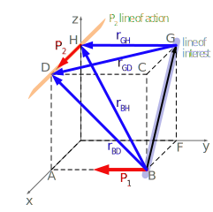
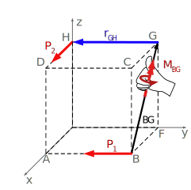

Keep in mind that to compute the magnitude of a moment about a line, we need to compute a vector moment about a point on the line and then dot this vector moment onto the line’s unit vector. There are two options for this computatons:
Option 1: The Two-Step Method separates the cross and dot products into two distinct steps.
Compute the vector moment of \(\vec{P_1}\) about any point on line \(\vec{BG}\text{,}\) including \(\vec{M_G}\) or \(\vec{M_B}\text{,}\) then
Dot \(\vec{M}\) onto the unit vector \(\widehat{BG}\)
Option 2: The Scalar Triple Product combines the cross and dot product into a single matrix determinant including the following vectors:
Top row: Unit vector for the line of interest \(\widehat{BG}\)
Middle row: Moment arm from line of interest to force vector. We’ll use \(\vec{r}_{HG}\) as it has the most zeros, which will simplify the algebra when computing the determinant.
Bottom row: Components of force vector \(\vec{P_2}.\)
Let’s set up the vectors for the scalar triple product starting with the unit vector \(\widehat{BG}\text{.}\)
The unit vector \(\widehat{BG}\) is found by dividing the positon vector \(\vec{BG}\) by its own magnitude.
\begin{gather*}
\widehat{BG} = \frac{\vec{BG}}{BG}=\frac{\ft{\langle -2.0, 0.0, 2.0 \rangle}}{\ft{\sqrt{(-2)^2+0^2+2^2}}} = {\langle -0.707, 0.0, 0.707 \rangle}
\end{gather*}
Next, the middle row of the scalar triple product is one of the moment arms from \(\vec{BG}\) to the force \(\vec{P_2}\text{.}\) There are four options which will all result in the same answer after you compute the scalar triple product.
\begin{align*}
\vec{r}_{GH} \amp= \ft{\langle 0.0, -2.0, 0.0 \rangle} \\
\vec{r}_{GD} \amp= \ft{\langle 2.0, -2.0, 0.0 \rangle} \\
\vec{r}_{BH} \amp= \ft{\langle -2.0, -2.0, 2.0 \rangle} \\
\vec{r}_{BD} \amp= \ft{\langle 0.0, -2.0, 2.0 \rangle}
\end{align*}
We’ll use \(\vec{r}_{GH}\) going forward as it is a one-dimensional vector and the zeros will simplify the determinant.

Finally, the bottom row of the scalar triple product are the force vector components.
\begin{gather*}
\vec{P_2} = \lbf{\langle 25, 0, 0 \rangle}
\end{gather*}
Now, combining the three vectors, here is the triple scalar product matrix:
\begin{align*}
M_{P_2} \text{ about } BG = \begin{vmatrix}
{-0.707} \amp {0} \amp {0.707} \\
\ft{0.0} \amp \ft{-2.0} \amp \ft{0.0} \\
\lbf{25} \amp \lbf{0} \amp \lbf{0}
\end{vmatrix} =\ftlbf{35.355}
\end{align*}
Hence, the magnitude of the moment caused by force \(\vec{P_2}\) about line \(\vec{BG}\) is \(\ftlbf{35.355}\text{.}\) As we found a positive answer, this confirms that the rotation caused by \(\vec{P_2}\) is in the same direction as the vector \(\vec{BG}\text{,}\) this is reinforced by the right-hand rule thumb direction in the diagram.

Validating the answer with the 2-step approach, we could first sum the moment of \(\vec{P_2}\) about point G.
\begin{gather*}
\vec{M_G}=(\ft{2})(\lbf{25})\ \hat{k}
\end{gather*}
Given that the \(\vec{M_G}\ \hat{k}\) moment and line \(\vec{BG}\) lie in a 2-D plane, you could even use a \ang{45} right triangle instead of a dot product to find the amount of \(\vec{M_G}\) which lies along line \(\vec{BG}\text{.}\)
\begin{align*}
M_BG \amp = M_G (\cos\ \ang{45})\\
M_BG \amp = \ftlbf{50}(0.707)\\
M_BG \amp = \ftlbf{35.355}
\end{align*}
Not all problems have simple geometry where you can form a right triangle to perform a dot product, but this process demonstrates the two-step combination of a cross and a dot product to find a moment about a line.